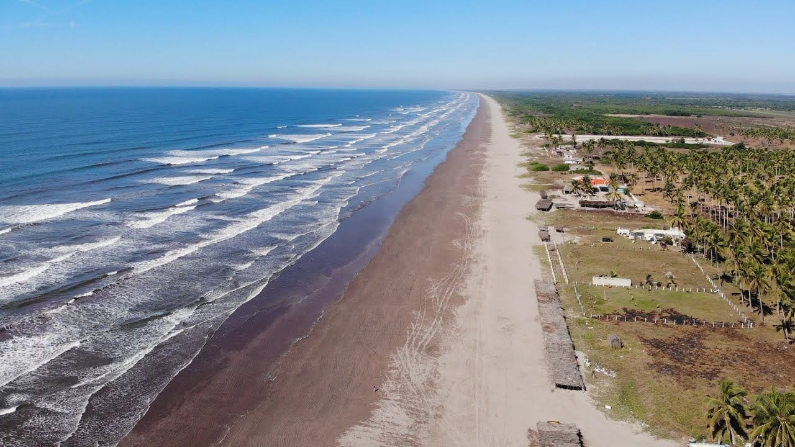
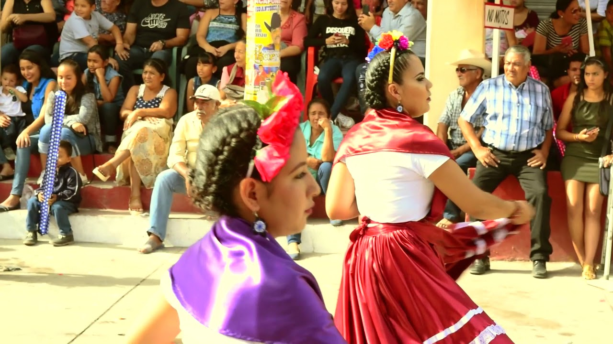
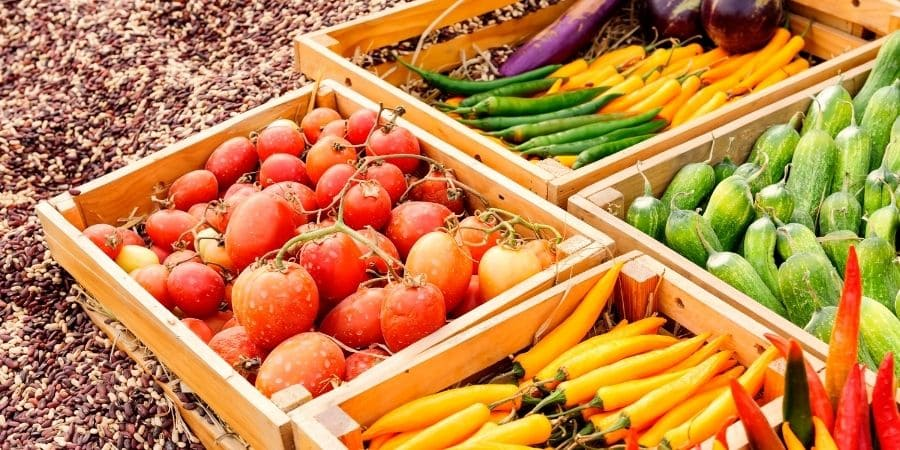

Tecuala se localiza en el noroeste del estado de Nayarit, México, cerca de la costa del Océano Pacífico. Limita al norte con el estado de Sinaloa y al oeste con el municipio de Acaponeta. Es una zona con influencia costera y agrícola.
Una de las celebraciones más importantes en Tecuala es la de la Virgen de Guadalupe, celebrada el 12 de diciembre con peregrinaciones, música, danzas populares y eventos religiosos. También se celebran carnavales y fiestas patronales.
La economía de Tecuala se basa en la agricultura, la ganadería y la pesca. Destacan los cultivos de maíz, frijol, sorgo, mango y tabaco. Además, la región cuenta con marismas y lagunas que favorecen la pesca de camarón y tilapia.
